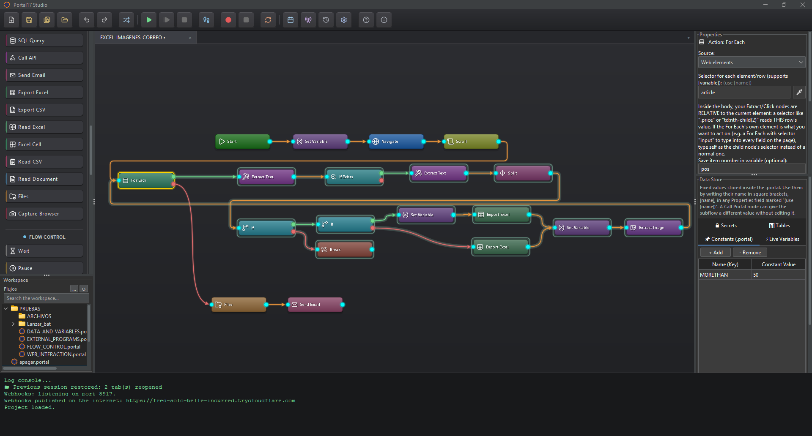

Your work, on one canvas.
Record a task. Shape the logic. Keep your data moving. Explore the three parts of Portal17 Studio that bring your process together.
A canvas for your process.
A connection for every step.
Drag an action from the left. Configure its properties on the right. Join its output to the next node and follow the logic across the canvas.

Choose an action
Web, Windows, data and flow-control nodes, grouped in the Actions panel.
Connect the logic
Cyan ports join the steps. Decisions and loops have separate outputs for each path.
Make it reusable
Configure properties, store data, group nodes and call other .portal flows.
You do the task.
The recorder connects the steps.
Hit Record and just work — on a web page, in Excel, in your company's desktop app. Clicks, typing, check boxes and shortcuts become editable nodes. Even copy and paste: copy an order number on a website, paste it into a Windows program, and the flow copies the live value on every run.
- Clicksearch box
- Type"ORD-1042"
- Press KeyEnter
- Extract TextCtrl+C → [copy_1]
- Click in AppOrder number
- Type in AppCtrl+V → [copy_1]
- Select in AppPriority = High
- Check in AppUrgent ✓
- Click in AppSave invoice
[secret:…]. Review other captured text and images before sharing a flow.Read it. Transform it.
Use it in the next step.
Bring together values from a page, a desktop control, an API or a database. Keep them in the Data Store and reference them wherever the process needs them.
- Read from the sourceExtract text, read application controls, or select fields from a JSON response.
- Make values usableTrim text, replace with regex, parse numbers and reformat dates.
- Put the result to workFill another app, write an Excel or CSV file, or send an email.
order_idORD-1042customerAna Ruiztotal249.00Live values captured during a run. A recorded copy and paste can become [copy_1], so the next run reads fresh data.
[order_id]→ ORD-1042regionMadridreport_namedaily-orders.xlsxreview_limit1000Named settings stored in the .portal file. Override them for a scheduled run, from the command line, or when calling a subflow.
[region]→ MadridORD-1042ORD-1043ORD-1044Keep rows inside your flow and use For Each to fill a form for every row. The recorder can turn repeated form entries into a table and a loop.
one row → one formportal_password••••••••••••api_key••••••••••••Values saved in Secrets are encrypted locally and referenced by name in a flow. Other node values, recorded text and images may contain sensitive information; review them before sharing.
[secret:portal_password]Ready to make work flow?
Build your first automation with Portal17 Studio.